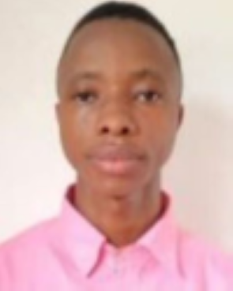

About Me
My name is Bundu Kallon I was Born in Gbappie Songo, Fakunya Chiefdom, Moyamba District, Sierra Leone West Africa. I live with my Uncle in the Capital City, I am a student of BYU Pathway Worldwide. My Family are my World and i love spending time with my family. I love Techology more especially in the area of Software development. I have gain so much experiences in the area of TECH. I feel gratful wwhen doing course at BYu

Freetown, Sierra Leone
Freetown is the capital and largest city of Sierra Leone. It is located on the Atlantic Ocean and is known for its historical significance as a former settlement for freed African slaves. The city is a vibrant hub of culture, trade, and education in West Africa. Famous for its stunning beaches, cotton tree landmark, and rich heritage, Freetown also boasts a warm and welcoming community. As the country's economic and cultural center, Freetown is home to a diverse population and hosts bustling markets, vibrant music scenes, and educational institutions like Fourah Bay College, the oldest university in West Africa. The city's historical landmarks, such as the King’s Yard Gate and the Sierra Leone National Museum, offer a glimpse into its colonial and pre-colonial past.